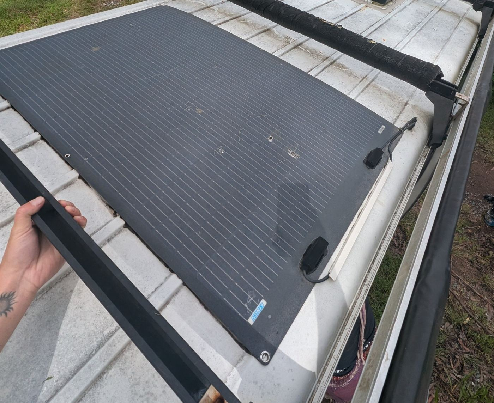
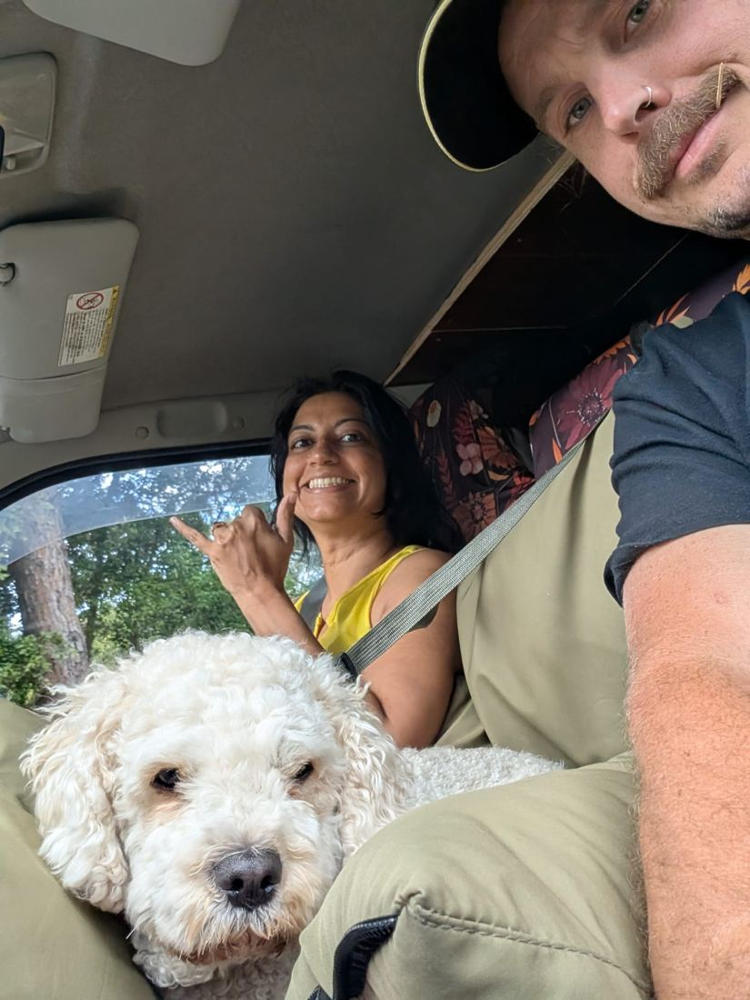

Solar blanket vs fixed panel: which suits you?

You've found the perfect shady spot by the river. Lovely for you, not so lovely for the panel on your roof. That's the big difference between a blanket and a fixed panel.
The short version
- A fixed panel lives on your roof. It charges whenever there's sun, including while you drive, with no setting up. But it only works where the vehicle is parked.
- A solar blanket folds up and lays out on the ground. You can park in the shade and put the blanket in the sun, and angle it at the sun. But you have to set it up, pack it away before driving, and keep an eye on it.
- Many people end up with both: a fixed panel for every day and driving, plus a blanket for shady camps and longer stays.
Both do the same job: turn sunlight into charge for your battery. The difference is where they sit, and what that means for shade, effort, theft, weight and cost. Here's how they compare, and who each one suits.
What we mean by each
A fixed panel is mounted permanently on the roof of your van, caravan, canopy or roof rack. Most are rigid glass panels in an aluminium frame. Some are flexible panels: thin, light sheets glued or screwed flat to the roof.
A solar blanket (also sold as a solar mat) is a set of thin panels sewn into fabric that folds up like a big book. You unfold it at camp, lay it in the sun and run a lead back to your vehicle.
Either way, you need a solar regulator (also called a controller) between the panel and the battery. It stops the battery being overcharged. Some blankets come with one. Many DC-DC chargers have one built in, through a solar input. REDARC's blanket manual says a regulator must be used between the blanket and the battery. You only want one regulator in the chain, so check both manuals before you plug in.
Side by side
| Fixed panel | Solar blanket | |
|---|---|---|
| Park in the shade? | No. Shade the vehicle and you shade the panel. | Yes. Park under a tree, put the blanket in the sun. |
| Charges while driving? | Yes | No. Must be packed away. |
| Setup each camp | None | Unfold, aim, run the lead, move it as the sun moves |
| Theft risk | Low. Bolted on. | Higher. Easy to pick up and walk off with. |
| Can aim at the sun? | Usually lies flat | Yes, on legs or propped up |
| Roof space needed | Yes | No |
| Weight on the roof | Yes, plus mounts | None. Carried inside. |
| Cable losses | Short run to the regulator | Longer lead, so more voltage drop |
Shade: the big one
In an Australian summer, you want the vehicle in the shade, especially with a fridge running. A fixed panel can't do that. Even partial shade hurts. REDARC's blanket manual says partly shaded panels have reduced output, and 4WDing Australia notes that shadows from things like snorkels and aerials "dramatically reduce" output.
A blanket lets you split the job: the vehicle stays cool under a tree, and the blanket sits out in full sun. REDARC suggests angling a blanket between 20° and 40° from the ground. A flat roof panel can't tilt, so it does best around the middle of the day.
Charging while driving
This is where a fixed panel wins. It works the whole time you're on the road. A blanket can't. REDARC says its solar blankets must be disconnected and securely stored when the vehicle is moving.
If you drive most days, a fixed panel plus a DC-DC charger may be all you need.
Effort and theft
A fixed panel is set and forget. A blanket needs unfolding, aiming, moving as the sun swings round, and packing away dry. REDARC says to let it dry before folding to avoid corrosion.
4WDing Australia puts it bluntly: blankets are "super easy to steal", because they fold up under your arm and can't really be secured. Fixed panels can be bolted or locked down. If you leave camp for the day, either take the blanket with you or accept the risk.
Cable length and voltage drop
Electricity loses some push (voltage) along a cable, and more over longer, thinner cables. This is called voltage drop, and it means less charge reaches the battery. A roof panel has a short run. A blanket out in the sun might be several metres from the vehicle.
Blankets typically come with leads of about 5 to 6 metres. For example, the Hardkorr 200W blanket comes with a 6m lead. REDARC sells 5m and 10m extension cables. Use the shortest lead that reaches the sun, and ask your auto electrician what cable size suits a longer run.
Heat on fixed panels
Solar panels make less power when they're hot. SolarQuotes says a typical panel loses about 0.4% of its output for every degree above 25°C. Their example: a 300W panel at 45°C gives about 276W. They also say most panels rarely go above 65°C even in a heatwave. By the same maths, that's roughly 16% down on the label.
Panel ratings assume air can get behind the panel to cool it. A flexible panel stuck flat to a hot roof has no gap, so expect it to run warm. Blankets get hot too. REDARC rates its blankets to run between 0 and 85°C.
Weight and size
From REDARC's own range, as an example of the difference:
| REDARC model | Watts | Weight |
|---|---|---|
| Fixed panel | 120W | 7.5kg |
| Fixed panel | 200W | 11.8kg |
| Folding panel (rigid) | 200W | 9.5kg |
| Solar blanket | 160W | 4.5kg |
| Solar blanket | 240W | 6.5kg |
From REDARC's ANZ solar brochure. Blankets fold down to about 365mm square. Fixed panel weights don't include mounting brackets.
Blankets are lighter per watt and pack small, but they take up space inside. A fixed panel adds weight high on the roof, but nothing to store.
Durability
Rigid fixed panels have a long track record. REDARC says monocrystalline panels can last 25 years or more with proper maintenance. Blankets are more exposed: they get folded, walked near and rained on. REDARC notes that high UV exposure still fades a blanket over time, and says not to walk on it. 4WDing Australia found cheap blankets tend to let moisture in quickly. Paying more for a blanket from a brand with a solid warranty is often worth it.
Cost per watt
Prices change all the time, so treat these as rough. We've worked out the cost per watt (price divided by watts) from Australian listings we checked in November 2026.
| Example | Price | About per watt |
|---|---|---|
| Hardkorr 200W fixed panel (no regulator) | $229 | $1.15 |
| REDARC 200W fixed panel (no regulator) | $429 to $449 | $2.15 to $2.25 |
| Kings 360W solar blanket (sale price, August 2026) | $184 (RRP $399) | $0.50 to $1.10 |
| Hardkorr 200W blanket at Snowys (with regulator) | $294 | $1.47 |
| REDARC 240W solar blanket | $1,499 | $6.25 |
Prices in AUD, approximate, at the time of writing. Fixed panels also need mounting and installation. Budget blankets often include a basic PWM regulator. Premium gear mostly buys better cells, tougher fabric, longer warranties and local support.
The pattern: at the budget end, blankets and fixed panels cost about the same per watt. At the premium end, blankets cost a lot more. REDARC itself says blankets often cost more than folding panels for about the same output.
Who each one suits
| You are... | Best fit |
|---|---|
| A weekender who drives most days | Fixed panel. Driving and roof solar do the work. |
| A stay-put camper (several days in one spot) | A blanket, or a fixed panel plus a blanket. No driving means solar does everything. |
| A 4WD or ute with no roof space | Blanket. Store it in the back. |
| A caravan with a big roof | Fixed panels first. Add a blanket for shady sites. |
| Living on the road, or chasing shade in summer | Both |
To work out how many watts you need where you travel, see How much solar do I need?

In our Toyota Hiace we wanted the convenience of a fixed panel, so we put a 160W Kings flexible panel on the roof. On its own it wasn't strong enough to run our Dometic CFF45 fridge the way we use it, especially when we stayed put. Adding a Kings solar blanket alongside it, through a splitter on the solar input, fixed it.
Want to see how a fixed panel and a blanket fit into a whole setup? Have a look at our ready-made kits.
The Power Planner works out how many watts of solar you need for your fridge, your state and your season.
Work out my solaror grab a ready-made kit
Kiran, Mitch & Ziggy
We last checked this page in November 2026. Spotted something that's changed, or got a question we didn't answer? Tell us, we read every message.
Quick answers
Is a solar blanket better than a fixed panel?
It depends on how you camp. A blanket lets you park in the shade and put the panel in the sun, but it can't charge while driving and is easy to steal. A fixed panel charges whenever there's sun, including on the road, with no setup.
Can a solar blanket charge while driving?
No. REDARC says its solar blankets must be disconnected and securely stored when the vehicle is moving. Only fixed panels charge on the road.
Do solar panels lose power in the heat?
Yes. SolarQuotes says a typical panel loses about 0.4% of its output for every degree above 25°C, so a 300W panel at 45°C gives about 276W.
Sources
- REDARC: Solar blanket instruction manual
- REDARC: Solar range brochure (ANZ)
- REDARC: Fixed solar panel FAQs
- 4WDing Australia: Solar panels vs solar blankets
- SolarQuotes: Solar panels and temperature
- Hardkorr: 200W fixed solar panel
- Hardkorr: Lifestyle 200W portable solar blanket (discontinued)
- OzBargain: Kings 360W folding solar blanket deal (August 2026)
- REDARC: Shop all solar (fixed panel prices)
- ARB: REDARC 200W fixed solar panel
- ARB: REDARC 240W solar blanket
Keep reading
 Start here
Start hereThe basics of off-grid power, simplified
Battery, solar, DC-DC charger and inverter, explained without the jargon. Batteries
BatteriesLithium vs AGM: which battery should you get?
The real difference, what it means for size, weight and cost, and when AGM still makes sense. Solar
SolarHow much solar do I need? By state and season
Why a Hobart winter and a Darwin winter need very different setups, with a table for every state. Charging
Charging